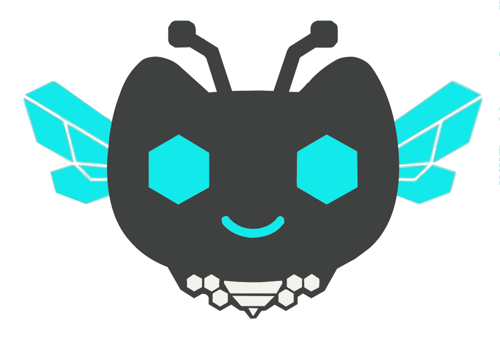

One manifest of TypeScript hooks installed across Claude Code, Cursor, Gemini CLI, and Codex CLI. The same rules enforce the same discipline — before tools run, after they complete, and before a session is allowed to stop.

swiz intercepts the agent loop at four key moments. Hooks can inject context, block tool calls, validate results, and refuse to let the session end until every quality gate passes.
Hooks enforce standards that agents consistently skip when left to their own judgment.
@ts-ignore, eslint-disable, force pushes, credential leaks, and workflow permission escalations before they ever execute.swiz idea and swiz continue together create a closed loop — the agent's own outputs become the next inputs, expanding the project without external prompts.Every hook is TypeScript, shares utilities from a common layer, and produces polyglot JSON that every supported agent understands.
swiz translates tool names and event names at install time. Hook scripts never need to know which agent triggered them.
~/.claude/settings.json. Full support across all 5 event types.~/.cursor/hooks.json (version 1). All events fire in the IDE.~/.gemini/settings.json. Full support across all 5 event types.
When swiz idea and swiz continue are used together, the agent's own outputs feed back as the next inputs — creating a closed loop that expands the project without external prompts.
swiz install to write hooks into your agents, and swiz status to verify.